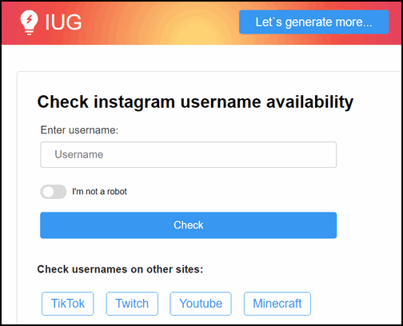
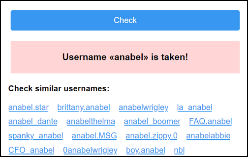
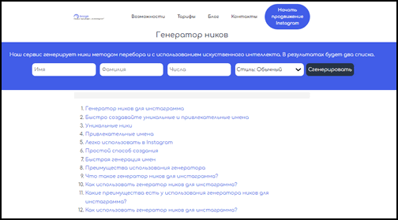
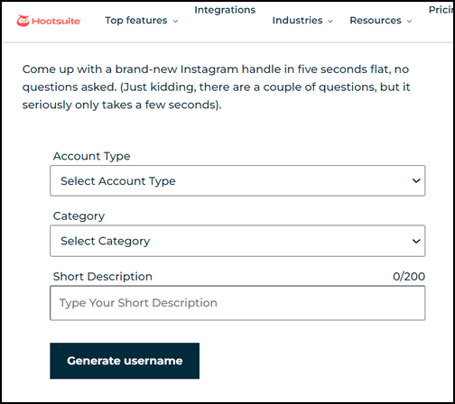
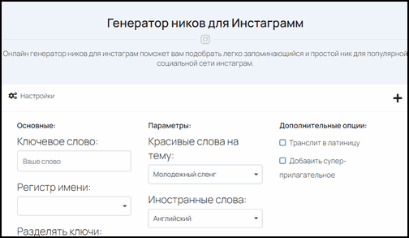
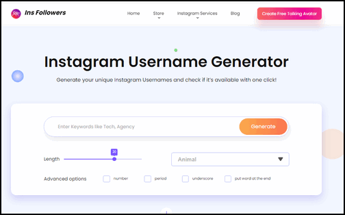
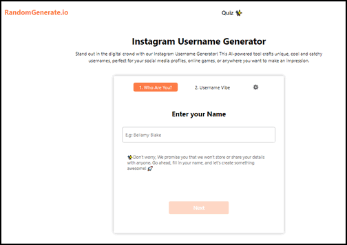

Как придумать и выбрать Ник в Инстаграм самостоятельно или через генератор

- Ник для Инстаграма*: проверить занятые
- Требования администрации Инстаграм* к именам и никам
- Как придумать самостоятельно
- Примеры ников для разных сообществ
- ТОП 50 ников для бизнеса
- ТОП 100 для пар и друзей в Инстаграм*
- 50 никнеймов для продвижения
- 50 ников для названия личных альбомов
- 5 лучших генераторов ников
- Сколько раз можно менять ник
Такая задача, как выбрать ник для Инстаграма*, не всегда оказывается простой. Особенно, если все понравившиеся уже заняты или нужно подобрать что-то необычное.
Ник для Инстаграма*: проверить занятые
Во время регистрации в социальной сети или смене никнейма в разделе «Редактировать профиль», пользователь увидит подсказку, которая показывает: занят ник или нет. Это красный крестик или же зеленая галочка, обладающие соответствующими значениями.
Кроме этого, Инстаграм* подскажет текущие свободные ники, которыми может воспользоваться человек. Социальная сеть генерирует никнеймы из персональных данных: указанной даты рождения, адреса электронной почты и имени. Иногда, получаются удачные варианты, требующие небольшой корректировки.
Для коммерческих аккаунтов и бизнес профилей предлагаю вычислить ботов и удалить их, чтобы повысить ER и охваты.
Требования администрации Инстаграм* к именам и никам
В социальной сети есть ограничения по никнеймам, касающиеся использования символов, слов и отдельных цитат. Требования делятся на технические и смысловые. Так, длина никнейма не должна превышать 25 символов. Другие ограничения:
- только английский язык в нике;
- отсутствие оскорбительных, нецензурных выражений;
- разрешены только символы: нижнее подчеркивание и цифры;
- поменять ник можно только раз в 30 дней.
Никнейм – это логин, с помощью которого можно зайти в учетную запись, он применим если нужно отыскать человека и для создания ссылки на страницу. Имена – это название профиля, которое можно написать на русском, воспользоваться любыми символами. Запрещено лишь указывать оскорбительные, нецензурные цитаты на которые могут пожаловаться посетители аккаунта. Есть другой вариант, как проверить никнейм в Инстаграме* прежде чем зарегистрироваться – использовать сервис Instausername, где есть не только генерация ников. Как воспользоваться:
- Перейти по ссылке на сайт.
- Ввести в поисковом поле никнейм, который нужно проверить.

- Подождать ответа – подобрать другие варианты, если не подходит.

В этом же сервисе можно сгенерировать массу вариантов названий страницы и воспользоваться для регистрации личного аккаунта.
Как придумать самостоятельно
Выбирая, как назвать Инстаграм* аккаунт, наименование можно самостоятельно придумать. Но такой ник должен соответствовать нескольким правилам, что поможет странице в дальнейшем продвижении и повысит узнаваемость бренда.
- Короткий ник, который легко запомнить. По теме блога, чтобы у покупателей или посетителей появлялись ассоциации. Для блогеров будут актуальны прозвища, созвучные с именем или индивидуальными чертами автора.
- Минимум символов и цифр. Желательно, чтобы цифр вовсе не было, если это не наименование бреда. Например, Forever21 использует в своем нике цифры, что соответствует названию бренда одежды.
- Повторы букв в конце или середине ника – не делает его лучше. Даже если интересный вариант уже занят, а очень хочется – стоит поискать другой или попробовать схожие комбинации.
- Название города в названии только в том случае, если ассоциируете себя с ним, постоянно проживаете или это единственное место, где предлагаете свои услуги.
- Никаких сложных слов – лучше аббревиатуры или короткие выражения. Например, первые буквы имени и фамилии могут стать ником в Инстаграме*. Более креативный вариант – составить анаграмму.
- Придумать крутой ник для владельцев сайтов поможет доменное имя. Этим способом можно получить аудиторию с интернет-площадки, не размещая дополнительной рекламы – потенциальные покупатели будут искать вас в социальных сетях.
- Не бойтесь использовать глаголы, которые описывают вашу деятельность.
- Транслитерация фамилии и имени – тоже неплохой вариант, но вполне стандартный.
Владельцы бизнеса и творческие личности могут использовать в названиях расширения файлов, специфические указания своей деятельности. Так, композиторы и певцы могут указать в конце «mp3» или «musicreator».
Узнайте, как продвигать бизнес в Инстаграме* эффективно
Приемлемый способ, как разделять слова – точки, но ими также не стоит злоупотреблять. В противном случае, вашим фанатам и потенциальным покупателям будет сложно найти страницу среди остальных. И если наименование аккаунта предполагает свыше 15 символов, стоит продублировать деятельность в разделе «Имя пользователя». Это относится к разделу «Биография», куда можно вписать до 300 символов с пробелами.
Примеры ников для разных сообществ
Предположим, у вас есть группа в Инсаграме* посвященная смешным видео из других социальных сетей. Чтобы подписчики понимали, к чему и откуда берется контент, в названии нужно указать полное или укороченное название: «ttfunny.clip», «like.lol». Варианты для названий:
| Смешные видео | Новости | Природа и пейзажи |
| drollvideo | Exclusive_new | natureoverwhere |
| coolpost | Chto_v_mire | Vokrug_sveta |
| lmaoclip | Gde_kto_kogda | naplanetezemlya |
| tt.trash | Novosti.city | zelenie_prostori |
| Like.videofunny | lastnews | russia_nature |
| absurdvideo | Home_news | adventureonplanete |
| axaxa.clip | Current.events | priroda_ze_best |
| location.smexa | socialsays | bestphotonature |
| simplelaught | Chto.eto.bilo | photogeniuspriroda |
| rju_nemogu | novostinsobitiya | vokrugnas |
| Сообщество с анонимными историями | Группа с цитатами |
| podslushano_news | wisemindquotes |
| pro100lubov | sagesayings |
| anonym_stories | enlightenedwords |
| whisperedShadows | proverbialwisdom |
| etherealtales | thoughtfulvibes |
| veileddreams | mindfulphrases |
| mysticaljourney | wisewordsmith |
| silentspectator | quotablewisdom |
| Illusionary.saga | inner_peacequotes |
| enchantedfables | quote.savant |
| Находки покупок с интернет-магазинов | Экспертное сообщество |
| TheProductGuru | VisionaryVirtuoso |
| SavvyShopperZone | ArtisticMindset |
| TrendyProductJunkie | MasterfulMaven |
| TheUltimateBuyer | TheExpertEthereal |
| TheProductEvolution | ProficientProphet |
| EliteProductSpot | TheArtsyAcrobat |
| PrimeProductPicks | CraftyConnoisseur |
| LuxeProductFinds | LuminaryLegend |
| EssentialProductHub | InnovatorInfluence |
| UltimateProductHunt | StarvingForSkill |
ТОП 50 ников для бизнеса
Бизнес требует серьёзного подхода при выборе оригинального ника. Это должно быть название, которое не созвучно с другими брендами, поэтому его уникальность тоже важный момент.
Как переключиться на бизнес-страницу и начать зарабатывать в Инстаграме* - читайте в нашей статье
Как придумать красивый ник для магазина, автора цифрового контента или страницы сайта:
- воспользоваться оригинальным названием. То же, которое указано на сайте;
- вызвать ассоциации у потребителя. Например, кондитерской стоит обратиться ко «вкусным» и «сладким» словам в названии;
- указывать свою деятельность. «Prodaja_kvartirspb», «youdress».
Проще, когда у компании есть готовое названии, а география не ограничивается одним городом (доставка возможна в пределах одной страны), тогда указывать название населенного пункта необязательно.
- NailGlamourStudio
- SparklingNailBar
- LuxeNailLounge
- NailTrendJunction
- VelvetNailChic
- PolishedPerfectionSalon
- DiamondNailStudio
- ChicNailHaven
- GlamourNailSociety
- NailBarElite
- Business_Guru
- Brand_Maestro
- Insta_Marketer
- Social_Guru
- Influence_Boss
- Pro_Promoter
- Power_Influencer
- Online_Marketer
- Guru_of_Growth
- Digital_Guru
- StyleHub_Shop
- FashionParadise_Store
- Boutique_Glam
- DenimKingdom_Shop
- TrendyThreads_Store
- ChicCloaks_Shop
- EliteElegance_Store
- CasualClassics_Shop
- LuxeLeathers_Store
- ActiveAttire_Shop
На все случаи:
- Marketing_Master
- Small_Biz_Guru
- Content_Creator
- Entrepreneur_Hub
- Ecommerce_Guru
- Startup_Maverick
- Strategy_Guru
- Creative_CEO
- Innovative_Guru
- Growth_Hacker
- Power_Visionary
- Web_Guru
- Sales_Guru
- Lead_Gen_Maestro
- Beast_at_Business
- Franchise_Guru
- B2B_Guru
- Business_Mastermind
- Salesforce_Guru
- Consulting_Guru
ТОП 100 для пар и друзей в Инстаграм*
Совместные страницы не так популярны, но все еще есть на просторах социальной сети. Трудно придумать красивый ник, который также просто запомнить и не забывать при вводе персональных данных.
- Insta_Bro
- Insta_Chums
- Twin_Flame_Twins
- Insta_Pals
- Bestie_Squad
- Insta_Queens
- Queen_Squad
- Tribe_Ties
- Posse_Palooza
- Insta_Clan
- Insta_Tribe
- House_Harmony
- Insta_Clique
- Insta_Comrades
- Comrade_Crew
- Playmate_Posse
- Insta_Double_Take
- Chum_Crew
- Social_BFF
- Insta_Soul_Mates
- Sistas_Galore
- Chickadee_Crew
- Insta_Posse
- Fam_Frenemies
- Insta_House
- Kinship_Krew
- Insta_Playmates
- Groove_Mate_Gang
- Insta_Twin_Flames
- Heartbeat_Harmony
- BFF_Squad
- BFF_Army
- Insta_Buddies
- Clan_Crew
- Insta_Gang
- Clique_Club
- Insta_Peers
- Soul_Mate_Sisters
- Insta_Buddy_Duo
- Double_Take_Date
- Insta_Sis
- Insta_Chickadees
- Buddy_Circle
- Insta_Fam
- Gangsta_Glam
- Insta_Kinship
- Peer_Palace
- Insta_Groove_Mates
- Buddy_Duo_Bond
- Insta_Heartbeats
- Enchanted_Union
- Romantic_Encounters
- SweetheartsTreasure
- loveydoveyvoyage
- dreamyforever
- lovesetforthis
- cupidsdreamteam
- Cupid_Connection
- LoveyDovey_Union
- Sweethearts_Treasure
- Loves_Infinite_Journey
- LovesTimelessTale
- Cupidssoulmatepair
- romanticharmony
- sweetheartssecret
- loveydoveytogether
- dreamyintertwined
- Sweethearts_Symphony
- Loves_Vivid_Colors
- Cupid_Soulmate_Pair
- Cupids_Beloved_Pair
- CupidsSoulmatePair
- RomanticHarmony
- sweetheartstreasure
- loveydoveyventure
- dreamyfulfill
- lovesvividcolors
- Love_Birds_Life
- StaCrossed_Dreamers
- Romantic_Dreamers
- LoveBirds_Duet
- Dreamy_Forever
- DreamyForever
- Lovestimelesstale
- cupidsoulmatepair
- romanticadventure
- sweetheartsforever
- loveydovviedventure
- Enchanted_Duet
- Dreamy_Intertwined
- Sweethearts_Voyage
- LoveyDovey_Treasure
- LoveyDoveyVoyage
- Dreamyforever
- lovestimestale
- cupidssoulfulpair
- romanticdreamers
- sweetheartssecret
- Dreamy_Harmony
- LoveyDovey_Adventure
50 никнеймов для продвижения
Чтобы получить большее число подписчиков, стоит обратить внимание на свой ник. Это также важно, потому что по названию страницы потенциальные покупатели и фанаты запоминают контент, автора. Какие оригинальные ники есть:
- Inbound_Inspirations
- Interaction_Instinct
- Brand_Ambassador
- Buzz_Builders
- Growth_Gurus
- Attention_Architects
- Impression_Manufacturers
- Buzz_Builders_Club
- Engagement _Elite
- Refer_Revelation
- Engaging_Entertainers
- Influencer_Squad
- Digital_Agents
- Engagement_Experts
- Influence_Innovators
- Connection_Creators
- Digital_Divas
- Lead_Generators_League
- Awareness_
- Connect_Collective
- Insta_Promoter
- Content_Creators
- Viral_Vibes_Velcro
- Conversion_Connoisseurs
- Awareness_AList
- Promoters_Posse
- Viral_Vibes_Vanguards
- Attention_Architects_
- Connection_Creators
- Shareaholics_United
- Audience_Amplifiers
- Shareable_Showcase
- Promoter_Posse
- Word_of_Mouth_Wizards
- Lead_Generators
- Shareaholics_Unite
- Sharetastic_Syndicate
- Word_of_Mouth_Magic
- Storytellers_Squad
- Buzzworthy_Brotherhood
- Followers_Formula
- Social_Marketer
- Marketing_Mavens
- Share_Squad
- Storytellers_Society
- Buzzworthy_Brood
- Social_Synergy
- Share_Squad_Strategists
- Influence_Innovators_Initiative
- Audience_Amplifiers
50 ников для названия личных альбомов
Создать ник для личного альбома проще всего, ведь такой аккаунт не нужно продвигать для запуска рекламы, не нужно пытаться угодить друзьям или близким. Это обычная страница, где можно размещать свои снимки, писать смешные подписи и оставлять в конце ника свое имя:
- Pixster_Jones
- Picture_Perfect
- Mobile_Maestro
- Picassio_Peter
- Snapmaster_Steve
- Snapdiver_Dan
- Shutterqueen_Kate
- Selfiesnap_Sue
- Pictureperfect_Pam
- Shutterfly_Sandra
- Snap_Champ
- Foto_Fanatic
- Still_Star
- Image_Intuition
- Piccasso_Paul
- Picture_Pipe
- Selfielover_Lucy
- Camera_Claire
- Selfieholic_Heather
- Selfiefun_Fiona
- Insta_Gallery
- Snapchatter_Sue
- Photo_Pal
- Shutter_Speed
- Camera_Cowboy
- Snappish_Sarah
- Mobile_Muse
- Mobilemaster_Mike
- Pictorials_Phil
- Mobilemuse_Mia
- Snapshot_Sam
- Camera_Chick
- Pictorialist_Pat
- Photo_Phil
- Photo_Penny
- Instant_Impressions
- Picassette_Patty
- Snapcrasher_Chris
- Instant_Impact
- Picturethis_Penny
- Shutterbug_Jones
- Selfie_Savant
- Snapper_Sam
- Picture_Me_Pablo
- Selfie_Sue
- Foto_Fred
- Stillshot_Simon
- Picoftheday_Penelope
- Image_Illusion
- Stillshots_Simon
5 лучших генераторов ников
Генератор – это сервис, где введя начальные данные, можно получить ответ в виде цитаты или слова. Например, основным параметром генератора является одна буква от пользователя или его имя. На основе этого будут показаны варианты, которые можно использовать для ника в Инстаграме*. #1 Бриджитhttps://bridgit.me/generator-nikov

Нужно указать имя, фамилию (можно выдуманные), выбрать стиль и добавить числа по желанию. Генератор предлагает 4 стиля: обычный, строгий, смешной, агрессивный и добрый. При заполнении пункт с цифрами необязателен, поэтому если название не требует дополнительных символов – можно пропустить. #2 HootSuite
Англоязычный генератор с интересными параметрами: выбор типа профиля (личный или коммерческий), категория профиля и небольшое описание. Например, владелец страницы может добавить свое имя, прозвище или настроение блога. #3 Generatomhttps://generatom.com/niki_dlya_instagram
Необычный сервис для генерации, который включает пять пунктов для заполнения и выбора. Пользователю нужно выбрать: какой символ будет разделять слова, ввести краткое описание, какие слова на ту же тему использовать, регистр. Сгенерированные варианты находятся снизу и за один запрос – всего один ответ. #4 Ins Followershttps://www.getinsfollowers.com/instagram-name-generator
Выбрать максимальный размер, добавить слово для описания, символ и тематику. Если не выбирать символ, то слова будут написаны вместе. Сервис создает до 15 разных вариантов, в зависимости от сложности задачи. #5 RandomGeneratehttps://randomgenerate.io/instagram-username-generator
Ввести свое имя, выбрать тематику и подождать завершения генерации. Всего два пункта, которые нужны для создания никнейма. Ниже появится иконка социальной сети и кнопка для копирования ника. То есть, с помощью сервиса можно сразу перейти в Инстаграм*.Сколько раз можно менять ник
Поменять ник в Инстаграме* пользователь может в любой момент, с мобильной и компьютерной версий. Несмотря на доступность, социальная сеть все же ограничивает частоту смены наименований – один раз в 14 дней. В течение этого срока, если пользователь придумал новый никнейм и уже его вписал, старый будет зарезервирован. То есть, воспользоваться им никто не сможет, кроме предыдущего владельца.
После 14 дней в профиле будет установлен новый никнейм, который в следующий раз получится сменить только через 30 суток.
Социальная сеть не поддерживает частые смены названий аккаунта. Потому что в основном наименования меняют мошенники, пользователи указавшие новое название случайно. Поэтому количество попыток для смены имени – не ограничено. Владелец страницы может указать любой никнейм, но не содержащий нецензурные выражения, оскорбительные.